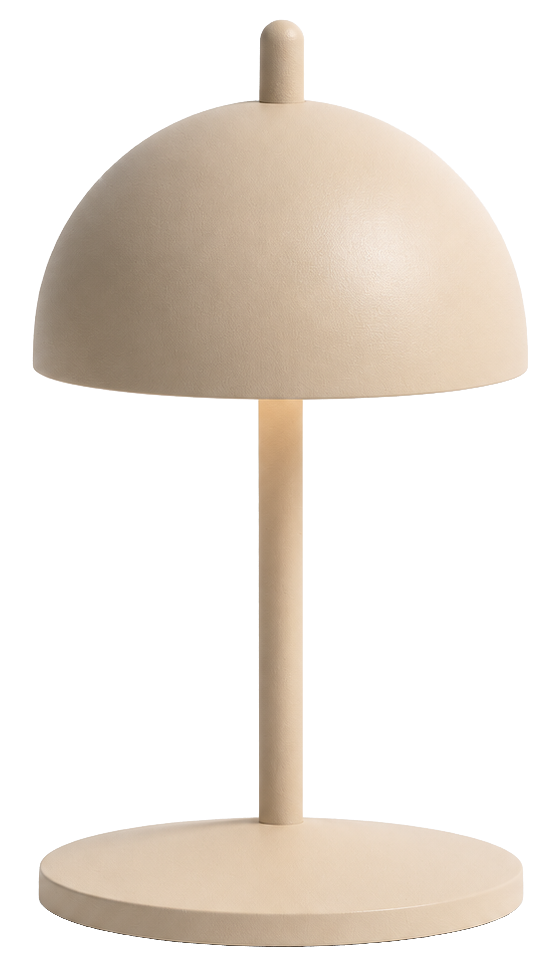
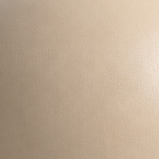
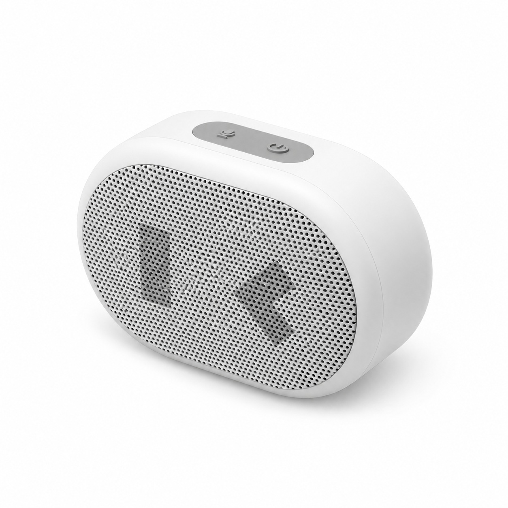

电商视觉案例 / NED ERIC
一组台灯商品视觉。从完整灯体看比例，再从受光的灯罩看清表面纹理。

NED / 材质

整图交代纹理在灯罩的哪里，特写让受光面的细小颗粒看得清。
产品视觉 / 结构

先用斜视图交代双键在机身上的位置，再放大同一处，让两个按键符号分得清。
品牌视觉方向稿 / V01
文字层级 / NED ERIC
案例标题负责识别作品，正文交代画面任务，旁注解释局部与整图的关系。